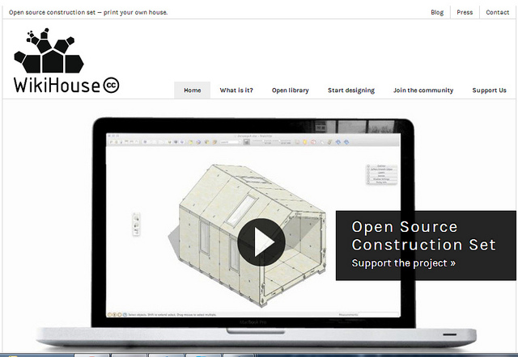

六間博物館的開放館藏圖像現況
2015-12-22
在之前一系列對於特定博物館、藝術館開放政策或經驗分享的介紹後，本文將一次介紹六間文化機構的開放館藏現況。許多文化機構雖然沒有採用公眾領域標章PDM、公眾領域貢獻宣告CC0或是創用CC的授權條款，然而在網站上公布的圖像使用條款或開放政策都是符合開放原則的。
2015-12-22
在之前一系列對於特定博物館、藝術館開放政策或經驗分享的介紹後，本文將一次介紹六間文化機構的開放館藏現況。許多文化機構雖然沒有採用公眾領域標章PDM、公眾領域貢獻宣告CC0或是創用CC的授權條款，然而在網站上公布的圖像使用條款或開放政策都是符合開放原則的。
2015-12-08
著作權法讓創作者能全權決定作品的用途並因而保障由作品獲利的權益，但同時也增加了他人取用其作品的成本。若是作品的著作權保障期限太長，他人就難以利用該作品進行改編或創新，對於整個社會文明與知識的進展都會形成不利影響。在著作權法保障範圍之外的公眾領域 (Public Domain)，是任何人無須詢問、不用付費就可以任意用於各種用途的資訊資源，希望大眾能因而降低取用成本，產生更多取用文化及進行創新的機會。
2013-07-22
「一個令人感到不適的事實是，幾乎所有我們今日稱之為「建築」的，都是為了世界人口中最有錢的百分之一所做的商業設計。」--Alastair Parvin
Wikihouse的創辦人Alastair Parvin，是英國倫敦「00:/」建築合作團隊的一員，自2011年起開始這個計劃。
2012-11-02
一、什麼是開放地理資料 (Open Geo-Data)?
開放地理資料(Open Geo-Data)是指「沒有技術和法律上障礙的地理資料」，也就是說，一方面，開放的地理資料應該使用開放源碼(open source)和開放標準(open standards)來交換和存取資料， 不被任何特定資料格式或技術方法所限制，另一方面，開放地理資料應該是使用開放的授權方式釋出，使地理資料交換和存取不因法律或智慧財產權(intellectual property right)限制，而使資料可無償地被自由的散佈．再製和修改。
二、台灣公部門地理資料開放現況與問題
台灣政府公部門的地理資料相當豐富不亞於先進的歐美國家，從中央到地方皆有圖資服務平台提供地理圖資服務，但這些地理資料仍不是開放資料(Open Data)。
2012-07-16
2012-07-06
隨著各國推動開放資料的具體行動，台灣在內的亞洲各國對相關議題的討論與政策推動也逐漸加溫。 然而，任何政策或法規的落實並非一蹴可及，前期的配套措施與策略規劃，係為逐步擴大各界對公共議題的注意、了解與投入的必要歷程。
開放資料精神下，政府的任務是「開放」並且完善相關制度，不過度干涉、限制產業或者公眾的使用。本文想回答的問題是：關鍵政策推動的前期，除健全制度與政策， 在「欠缺open data法令法規」和「完整的open data法令法規」間的過渡時期，是否有些策略可主動推動公眾認識、參與及應用。
日本：實踐多元雙向參與
2012-05-04
2012-03-02
虛擬角色是否受到著作權法保障，一向是著作權法上較為爭議的議題之一。如同筆者先前在創用CC部落格刊載的「超人不會飛？」部落格文中，僅簡單介紹美國實務對於虛擬角色的著作權爭議， 但部落格文受限於篇幅，無法一一詳細介紹美國實務發展的代表性案件，故本次專欄文將以眾人所得以快速建立角色型像的虛擬角色- -英國特務007面臨的角色著作權爭議案件為主軸，介紹虛擬角色著作權的演變， 盼能在此文中使讀者得以清楚地理解虛擬角色著作權的演變以及判斷方式。
一、前言
說到James Bond，或是007的名號，大家第一個會想到的印象是什麼呢？不外乎是俊帥的白人特務、英挺的西裝打扮、俐落的動作和環繞在他身旁的龐德女郎。換言之，如果將其工作背景從英國軍方改為白領工作者，移除了刺激的冒險和龐德女郎後， James Bond是否仍為極富吸引力之角色？或是觀眾會對著那角色大喊一聲「這不是007」？又，換個角度來說，如果今天出現了一段影片，該影片主角為一個穿著英挺西裝的俊帥白人，他有著俐落的身手，身旁也有一位曼妙女郎，觀眾在看這段影片的時候，是否會直接地聯想到007？
 2010-02-01
2010-02-01
2009-03-05